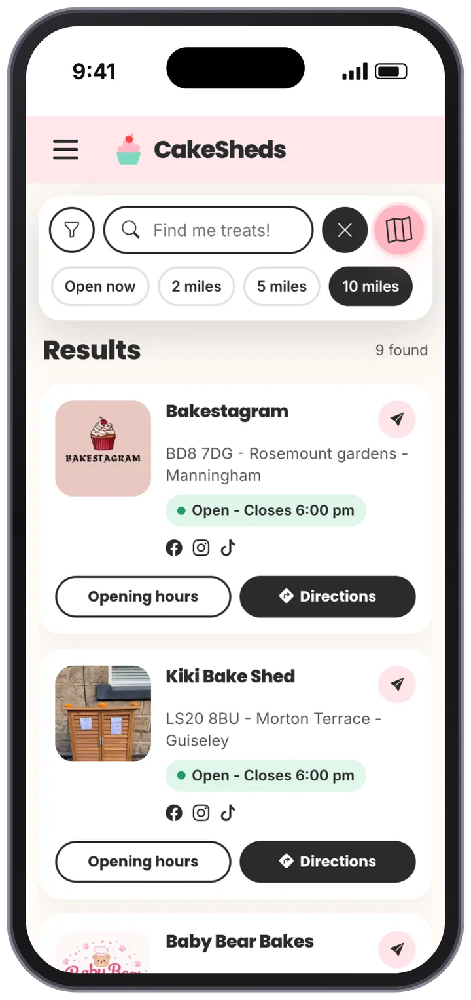
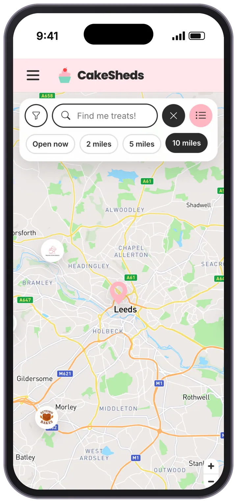
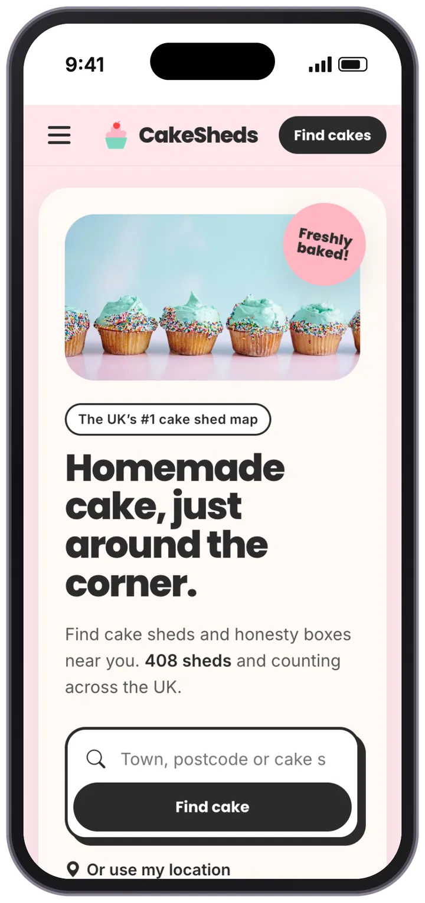
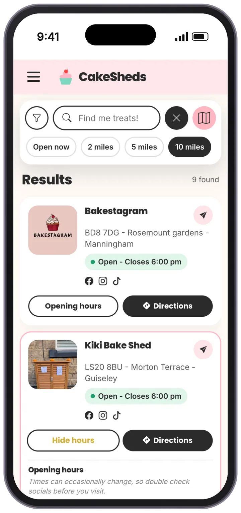
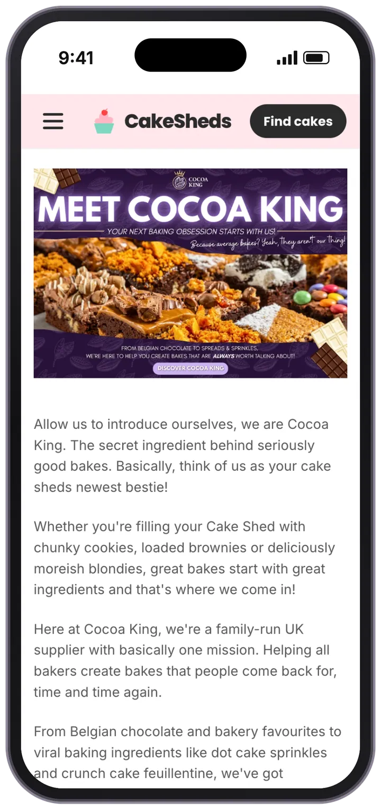

CakeSheds: putting the UK's cake sheds on the map
Cake sheds were popping up everywhere, but there was no way to see them all. My husband Mark and I built the UK's first cake shed map: I led the UX and UI, and Mark built it. It now lists over 400 sheds and has been featured by CNN.





01 — OverviewA map for the UK's cake sheds
A cake shed is a small roadside stall where a home baker leaves cakes for passers-by, who pay by cash, card or QR code. CakeSheds is the directory and map that helps people find them. I co-founded it with Mark, designed the experience, and run the blog and social media.
Find a cake shed nearby, know whether it's open, and get there.
Be found by more people, without having to build a website of their own.
Cake sheds were popping up all over the UK, but there was no single place to find them.
- 408cake sheds listed across the UK, and counting
- 1stcake shed map in the UK when it launched
- CNNfeatured in CNN Travel, October 2026
02 — The gapHow do you find a cake shed?
We kept seeing cake sheds around where we live, and wondered how many were out there and how anyone found them. Most were shared on social media and by word of mouth. There was no map. As a small business ourselves, we also wanted to help these home bakers be found.
"We'd seen a few popping up here and there and started wondering just how many cake sheds were actually out there."
Me, speaking to CNN Travel
What a map had to get right
- Easy to findSheds were scattered across posts and local groups. Visitors needed them on one map, near wherever they are.
- Is it open?Sheds keep their own hours and sell out, so visitors need opening times before they make the trip.
- Easy for ownersMany owners are home bakers fitting baking around work and family, so being listed had to take them very little effort.
03 — OnboardingFilling the map before launch
A map is only useful if it's full. Before launch, we contacted cake sheds directly and onboarded them in bulk over a few weeks, so visitors would find sheds near them from day one. It was a lot of hard work, and it's why the map was useful from the start.
Each listing carries what a visitor needs: where the shed is, when it's open, a photo or logo, and links to the shed's own Facebook, Instagram and TikTok, so owners keep the relationship with their customers.
04 — DesignFrom first design to launch
I designed the core journey in Figma, starting from a low-fidelity component library and building up to high-fidelity screens: find sheds on a map, check one out, and see its opening hours.
- Map with pins Search, filters and a list view around a map of nearby sheds.
- Pin selected Tapping a pin shows the essentials: distance, opening time and directions.
- Shed profile A fuller profile with a photo, tabs, opening hours and payment methods.
The site today
Mark built the version we launched in April. Since then we've rebuilt the site together using Claude, keeping the same journey with a warmer, bolder look: the early yellow and teal became the CakeSheds pink, with chunky type and rounded cards.
- Search your wayBy town, postcode or shed name, or one tap for cake sheds near me.
- Map or listThe same results on a map or as a list, one tap apart.
- Quick filtersOpen now and 2, 5 or 10 miles sit right under the search, no menu needed.
- Hours up frontEach result shows whether it's open, with full hours and a reminder to check the shed's socials, as times can change.
05 — Shed ownersSupporting the bakers
CakeSheds is for the people running the sheds as well as the people visiting them. Partner pages introduce shed owners to businesses that can help them run their shed, each with an offer for CakeSheds owners.
Partners
- Cocoa King Belgian chocolate and baking ingredients from a family-run UK supplier, with a discount code for shed owners.
- FoodCore Recipes, costs and allergen labels in one place, with a discount on plans for CakeSheds members.
- MyCakeShed Turns enquiries scattered across Instagram, Facebook and WhatsApp into paid orders in one shop.
Blog and social media
-
I run the blog and our social channels. We started the blog for SEO, so people searching for cake sheds would find us. It has over 30 posts so far, from seasonal bakes to baker stories and tips for a cake-filled day out.
It's worked: CakeSheds now ranks top on Google for cake sheds and appears several times on the first page, mainly thanks to the blog.
Read the CakeSheds blog (opens in a new tab)
06 — ResultsFrom an idea to national press
CakeSheds launched in April 2026. Six months later:
- 408cake sheds listed across the UK, up from over 300 in October
- TopGoogle result for cake sheds, with several first-page listings
- CNNTravel feature on Britain's cake shed trend, October 2026
'Cake sheds' are Britain's new obsession and they're popping up everywhere
"Their directory, which was launched in April 2026 in response to the increasing number of cake sheds appearing on roadsides, has over 300 cake sheds listed."